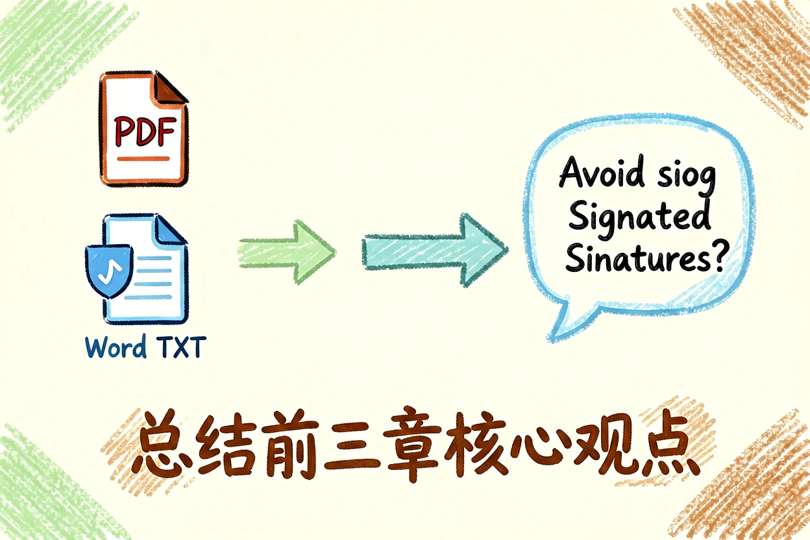
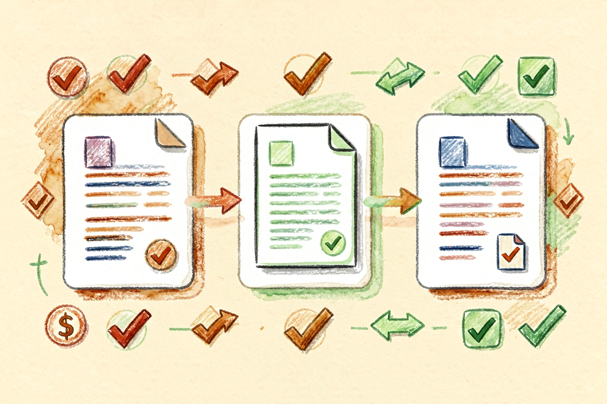
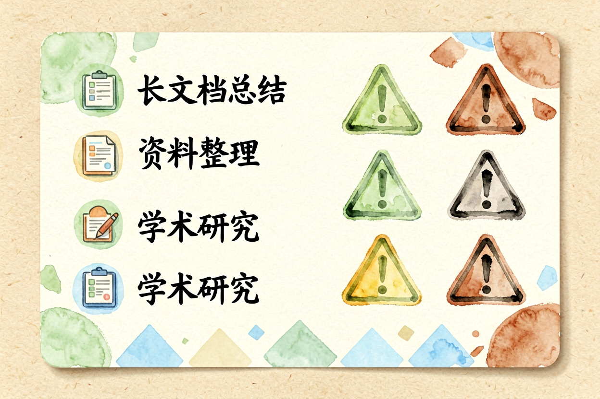
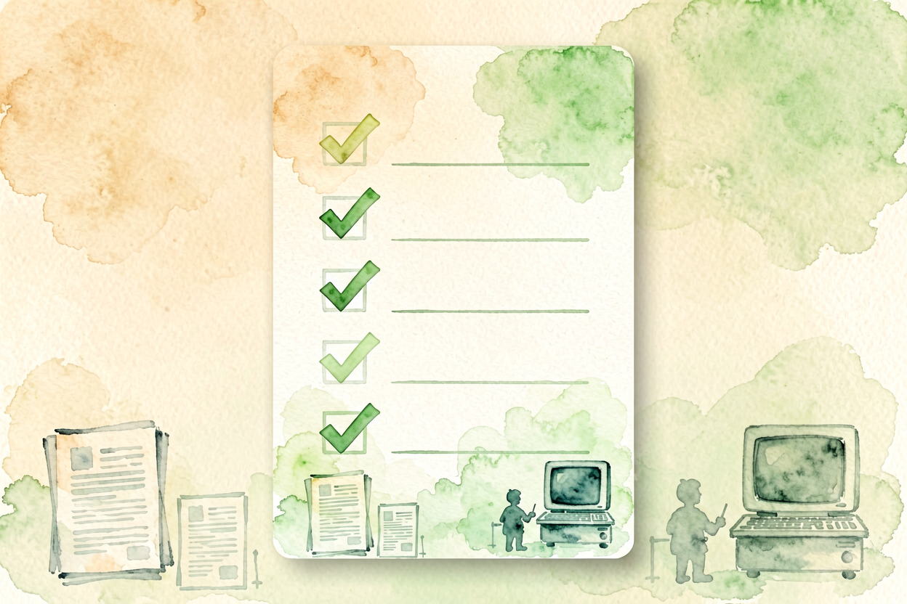

Kimi 新手教程：长文本处理与智能搜索
Kimi是月之暗面出品的国产AI，长文本处理是它的杀手锏，200万字一篇文档直接丢进去就能逐字定位回答。
Kimi新手教程是本文的核心主题。 !配图1界面概览
{kind=link}
Kimi新手入门：长文本处理专家
Kimi 是月之暗面开发的国产大模型，最大卖点是 200 万字长文本处理。普通大模型上下文窗口在 32K 到 128K 之间，Kimi 直接拉到 200 万字，相当于把一本厚书整个喂进去，还能逐字定位回答。
这和NotebookLM 评测讲的 Google 工具逻辑类似，但 Kimi 免费开放、国内直连、中文理解更强。适合读长文档、查资料、做研究分析。不过也要注意，长文本不是万能的，碎片化问题用普通对话更快。
Kimi新手入门：注册与基础功能熟悉
打开 kimi.moonshot.cn，用手机号或微信登录。界面简洁，输入框在中央，左侧是历史对话列表，右侧有文件上传、联网搜索开关。
新手建议先关掉联网搜索，用纯文本对话熟悉交互。Kimi 的联网搜索需要额外权限，免费版可能受限。文件上传支持 PDF、Word、Excel、TXT，单次最大 20MB，适合处理报告、论文、合同等长文档。
Kimi新手入门：长文本处理实战

上传文档后，Kimi 会先扫描全文，然后根据你的问题定位相关段落回答。常见问题类型：
提问示例：
- 「这篇文章的核心观点是什么」
- 「第三章提到的技术方案有什么缺陷」
- 「A方案和B方案各有什么优缺点」上传后别急着问，先等 Kimi 处理完（进度条显示完成），再提问。处理速度取决于文档长度和复杂度，大文档可能需要 5-10 分钟。
Kimi新手入门：联网搜索与多轮对话

联网搜索打开后，Kimi 会实时抓取最新信息回答。适合查新闻、查政策、查实时数据。但搜索结果质量取决于网页内容，AI 可能总结不全或漏掉关键信息。
多轮对话是 Kimi 的强项。同一个文档可以连续问多个问题，Kimi 能保持上下文连贯。比如先问「这篇文章的核心观点是什么」，再问「这个观点有什么证据支持」，最后问「这个观点有什么局限性」，三步连贯，效率远高于单轮提问。
Kimi新手入门：五个高频场景

场景一：读论文做总结上传 PDF，让 Kimi 总结核心观点、研究方法、结论。适合学生、研究人员快速消化文献。
场景二：查资料做研究联网搜索 + 长文本处理组合，先搜最新信息，再喂给 Kimi 整理成报告。适合写论文、做调研。
场景三：读合同找风险点上传合同文档，让 Kimi 找出风险条款、模糊表述、不公平条款。适合法务、商务人士快速审查。
场景四：多文档对比分析上传多份报告，让 Kimi 对比观点、提取共识与分歧。适合行业研究、竞品分析。
场景五：辅助写作把素材丢给 Kimi，让它帮你整理结构、提炼观点、润色文字。和AI 写作工具对比里讲的生成型工具配合使用。
Kimi新手入门：常见误区与避坑

误区一：把所有问题都丢给 Kimi碎片化问题用 Kimi 效率低，短问答用普通对话更快。Kimi 适合长文本、复杂任务，不适合简单查询。
误区二：上传超大文档不拆分 200 万字是上限，但超过 100 万字的文档处理速度慢、回答质量下降。建议拆分成 50 万字以内的小文档。
误区三：不验证 AI 输出的准确性 Kimi 可能漏读或误读，重要信息要二次核实。特别是法律、医疗、金融领域，别直接采信。
关于 Kimi 新手教程，核心逻辑是「长文本是优势，但不是万能」。别把 Kimi 当成搜索引擎，它擅长处理你喂进去的文档，不擅长实时搜索。用对场景，效率翻倍；用错场景，浪费时间。
Kimi新手入门的关键是动手试。别看完就忘，当天就上传一份文档测试，让操作成为习惯。用多了自然熟练。掌握 Kimi 的技巧，长文本处理效率会大幅提升。

本文信息核对于 2026-09-07。AI 产品的价格、免费额度与功能变动频繁，实际以各工具官网当前说明为准。